load("data/lab1_filer/jordprov.Rdata")
# write your R-code here
View(jordprov)
View(jordprov$al)Distributions, simulations and model fit
Computer lab 1
Abstract
The purpose with this lab is for you to - practice on the concepts density function and distribution function - practice to draw random numbers from a distribution - practice to use different graphical methods to evaluate possible distributions that your observations can come from
Data material soil samples
In the forest area ASA test park in Småland, 94 different pits are dug in the ground, and from each pit soil samples are taken where, among other things, aluminum content and calcium content are measured (mg/g). The data is in the file
data/lab1_files/jordprov.Rdatawhich contains the two variablesalandca.Open the file in RStudio, for example by clicking on it under Files. You can see the measured concentrations by clicking on the icon furthest to the right on the
jordprovrow. Alternatively, you can typeView(jordprov)in RStudio’s console window. To access the variablealin the datasetjordprov, you would writejordprov$al.
1 Overview of the data material
Firstly, you would want to calculate some summary statistics for the data (mean, min, max, standard deviation, etc.) and visualize some overview figures. The command
mean(jordprov$al)gives you the mean of the aluminum measurements.
Overview analysis of aluminum level:
sd_al = sd(jordprov$al)
mean_al = mean(jordprov$al)
summary(jordprov$al) Min. 1st Qu. Median Mean 3rd Qu. Max.
56.22 68.75 74.46 74.11 80.02 107.89 hist(jordprov$al)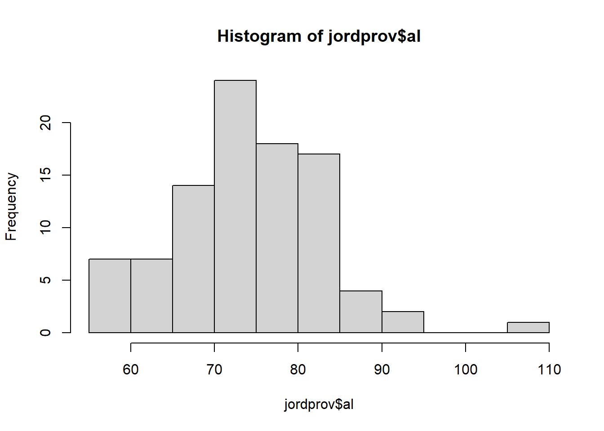
boxplot(jordprov$al)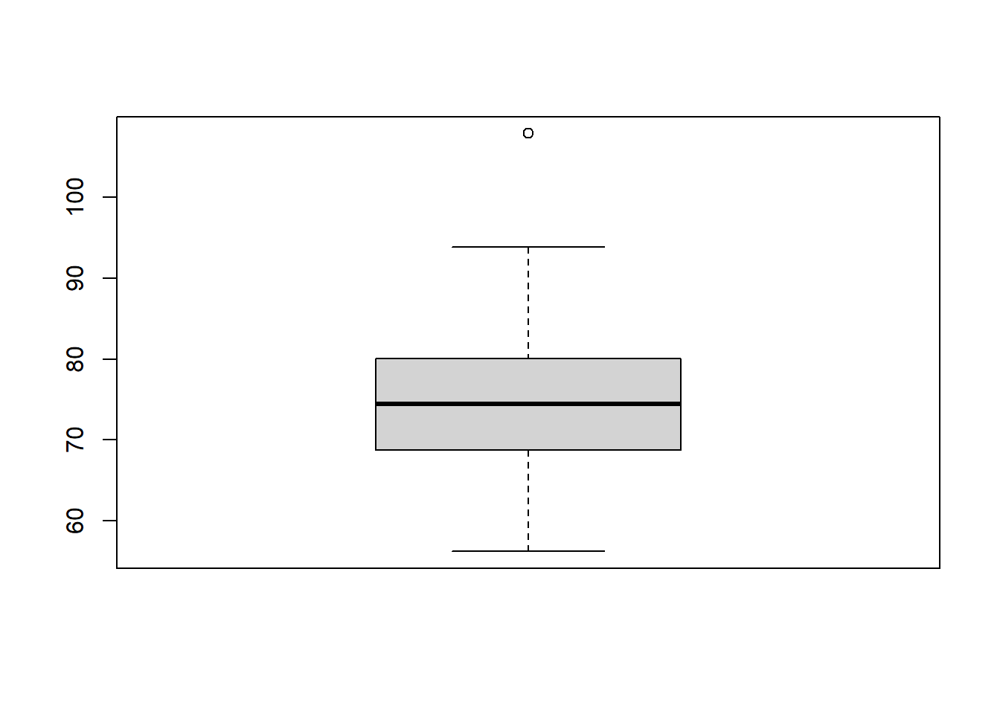
plot(jordprov$al)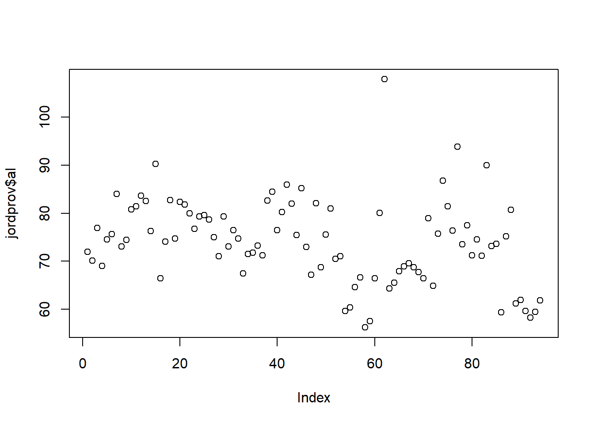
Overview analysis of calcium level:
sd_ca = sd(jordprov$ca)
mean_ca = mean(jordprov$ca)
summary(jordprov$ca) Min. 1st Qu. Median Mean 3rd Qu. Max.
6.202 11.227 14.172 17.352 21.854 47.167 hist(jordprov$ca)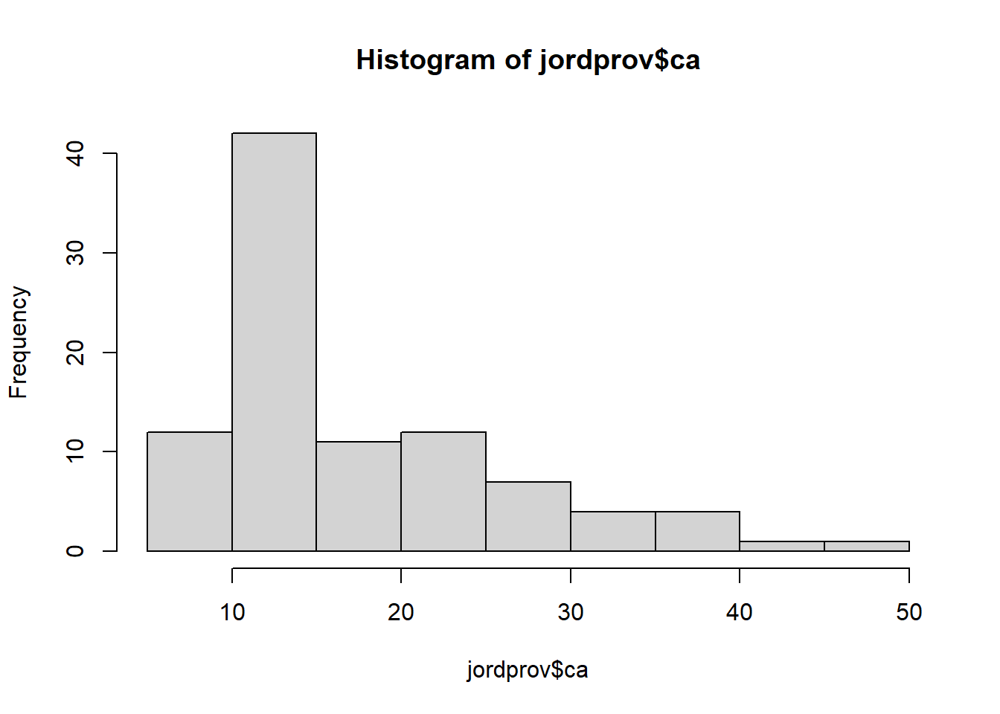
boxplot(jordprov$ca)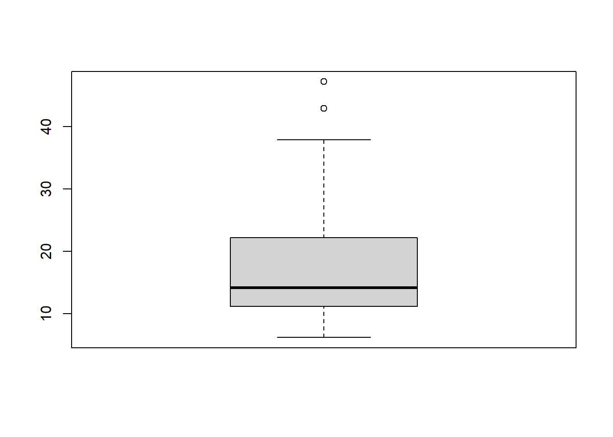
plot(jordprov$ca)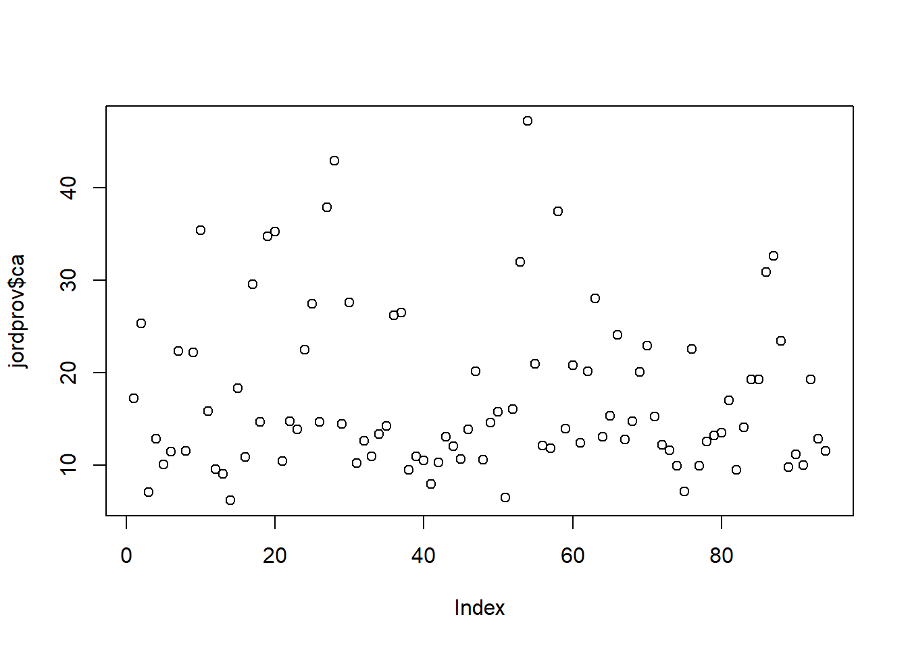
If aluminum is x and calcium is y:
plot(jordprov$al, jordprov$ca)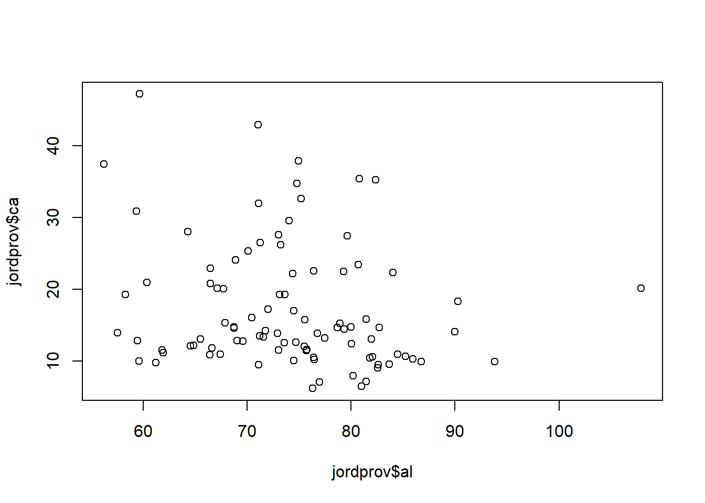
Empirical cumulative distribution function (ECDF):
plot.ecdf(jordprov$al)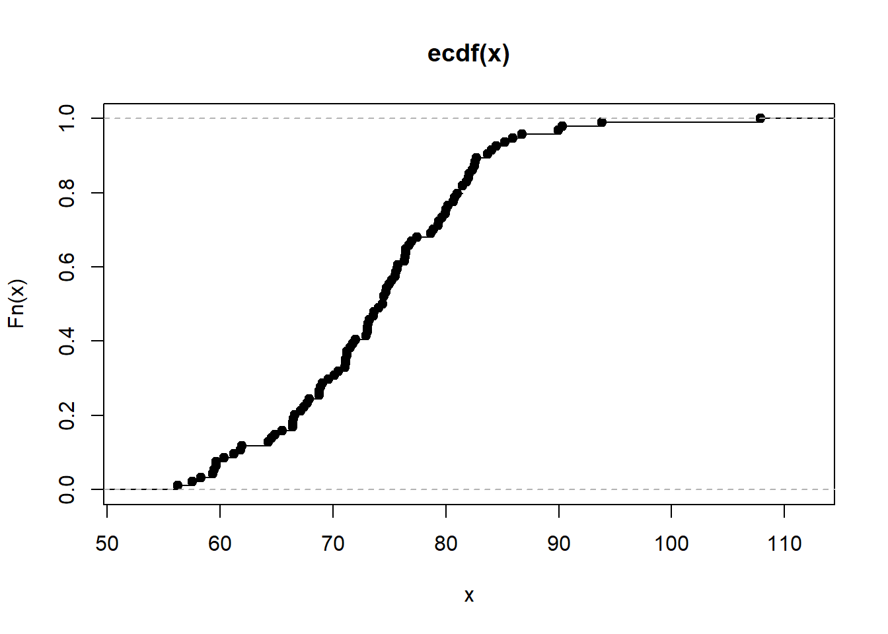
plot.ecdf(jordprov$ca)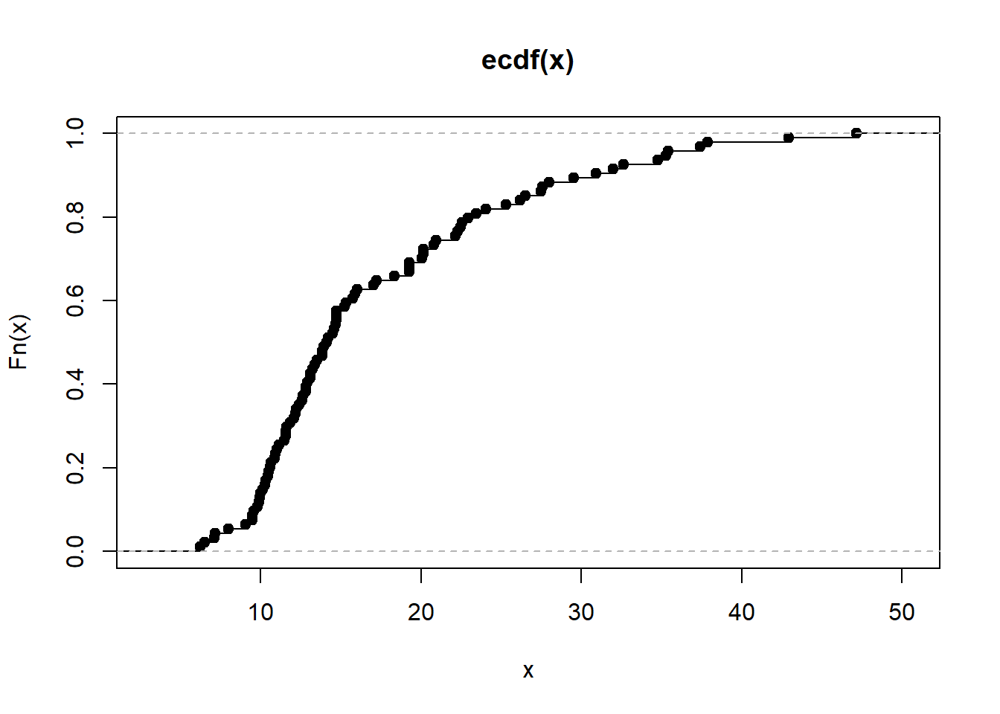
From the overview analyses, we found out the mean and standard deviation of aluminum in this studying area are 74.11 and 8.74, while the results of calcium are 17.35 and 8.68, respectively. By plotting the calcium level changes with aluminum, we can not determine any explicit relationships between these two chemicals.
plot.ecdf(jordprov$al, panel.first=grid())prob_al_lt80 = mean(jordprov$al <= 80)Answer:
From the ECDF figure above, the proportion of measurements that are below 80 mg/g is 74.47%.
Answer:
quant_al_gt70p = quantile(jordprov$al, prob=0.3)When \(P(X > x) = 0.7\), the aluminum level is at 70.05 mg/g.
Does a standard distribution fit to my data?
Now we want, using graphical methods, to investigate if the two datasets can be modeled with some standard distributions. Some continuous standard distributions that we encounter in the course are the normal distribution, lognormal distribution, exponential distribution, and uniform distribution.

When looking at the histogram for aluminum levels, it doesn’t seem unreasonable that they could be normal distributed, but a histogram is often a blunt instrument when trying to fit a standard distribution to data. A more useful method is to plot the data on a so-called probability paper or QQ plot. To illustrate the method, we are helped by seeing how it works on samples where we really know the distribution, so we need to know how to generate random numbers from different distributions.
2 Simulate random variables in R
In R there are functions for drawing numbers from standard distributions. You find some examples below.
| Distribution | Function | Example |
|---|---|---|
| Normal | rnorm(antal,mean,stddev) |
rnorm(20,3,1) |
| Exponential | rexp(antal,1/mean) |
rexp(50,0.5) |
| Uniform | runif(antal,min,max) |
runif(30,-2,5) |
| Binomial | rbinom(antal,n,p) |
rbinom(10,5,0.2) |
| Poisson | rpois(antal,mean) |
rpois(25,4) |
If you, for example, want to simulate 100 random numbers from a normal distribution with a mean of 20 and a standard deviation of 3 and store them in the variable norm1, you would do it like this: norm1 <- rnorm(100, 20, 3).
# Normal distribution
norm1 <- rnorm(100, 20, 3)
hist(norm1)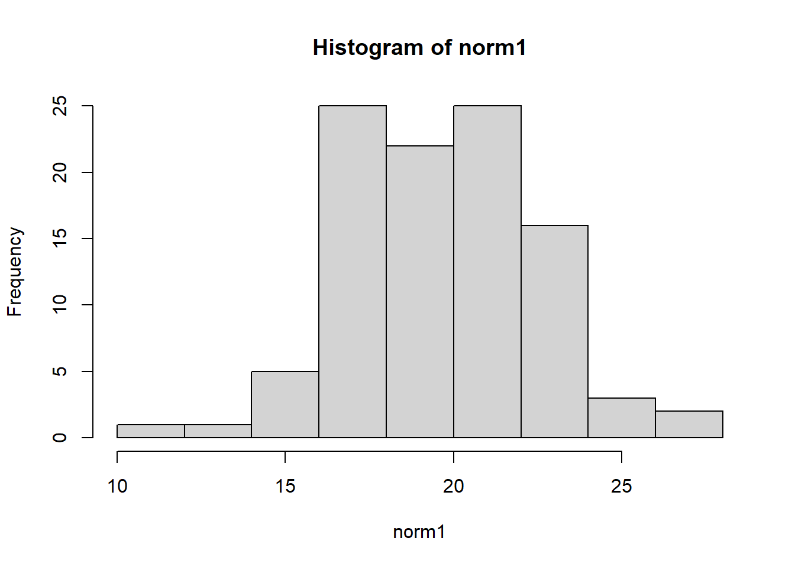
norm2 <- rnorm(1000, 20, 3)
hist(norm2)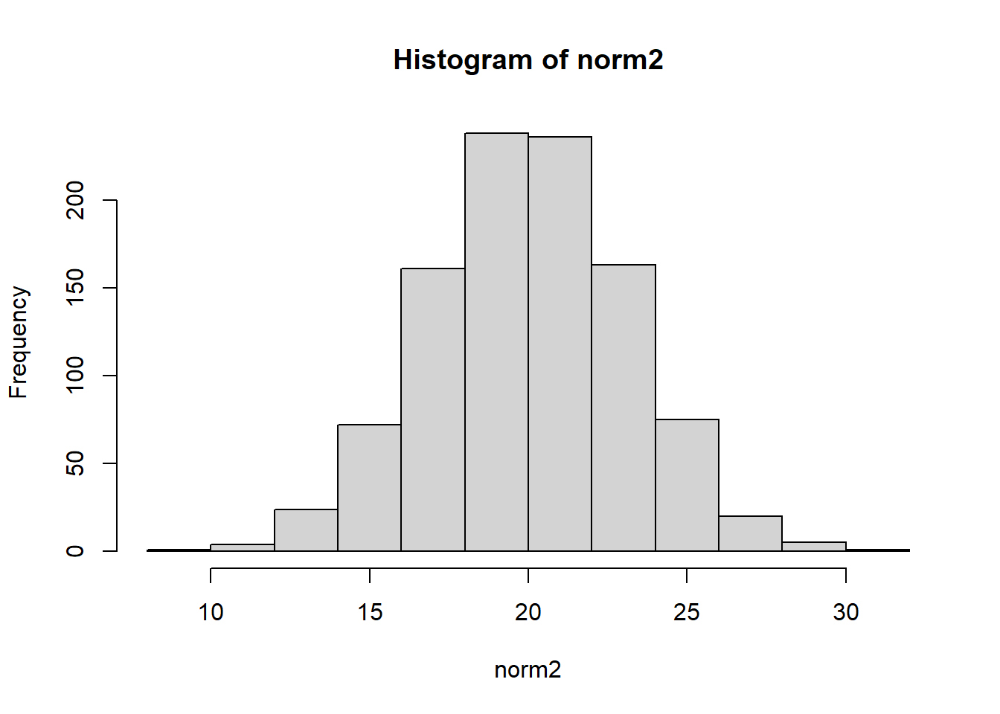
Answer:
For the results of 100 simulations, the overall distribution follows a roughly normal distribution pattern. However, due to the small sample size, there might be some extreme values. In contrast, the results of 1000 simulations more closely matches a standard normal distribution.
# Exponential distribution
exp1 <- rexp(1000, 0.5)
hist(exp1)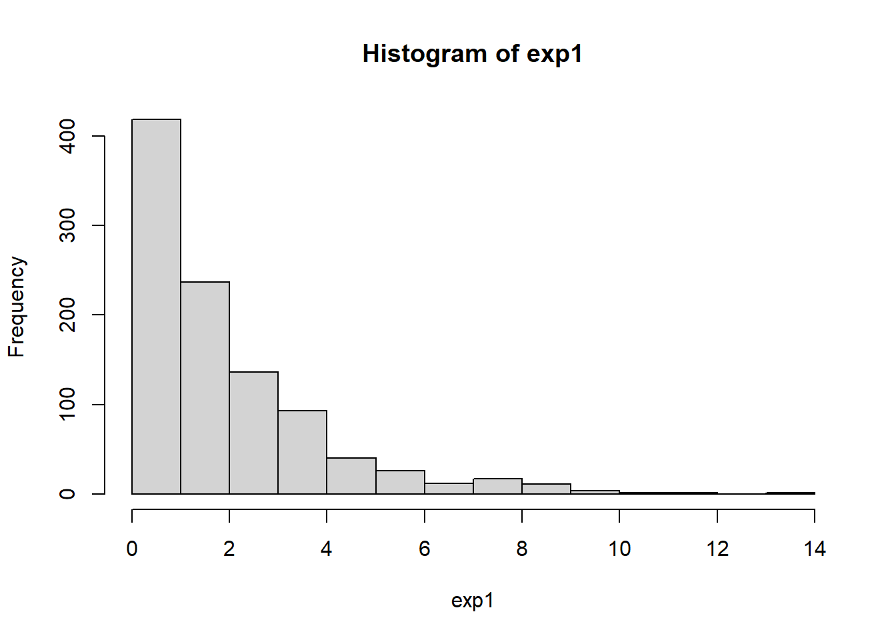
The histogram of the sampled data matches an exponential distribution.
# Uniform distribution
unif1 <- runif(1000, 3, 5)
hist(unif1)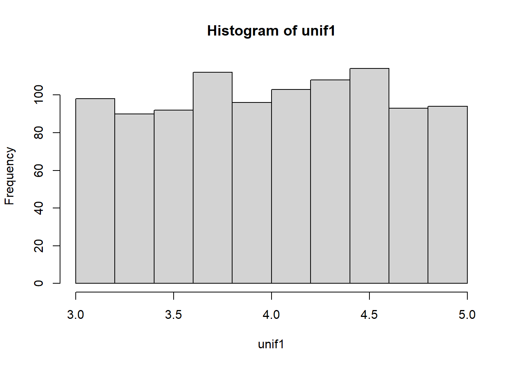
The histogram of the sampled data matches a uniform distribution.
QQ-plot
Often, there is the question of whether data in a sample can be modeled with a theoretical standard distribution. This was the case, for example, with the aluminum levels in the soil that you studied earlier. A graphical method when attempting to fit your data to a distribution is to use a so-called QQ-plot, where Q stands for quantile. The values in the dataset (sample) are compared with those expected from a certain theoretical distribution. If the data matches the expected values, the points in a QQ-plot will lie along a straight line. Conversely, if the QQ-plot shows significant deviation from a straight line, the distribution we tested does not fit our data well. To test if a sample might come from a normal distribution, the command is qqnorm(name of the sample).
qqnorm(norm1)
qqline(norm1)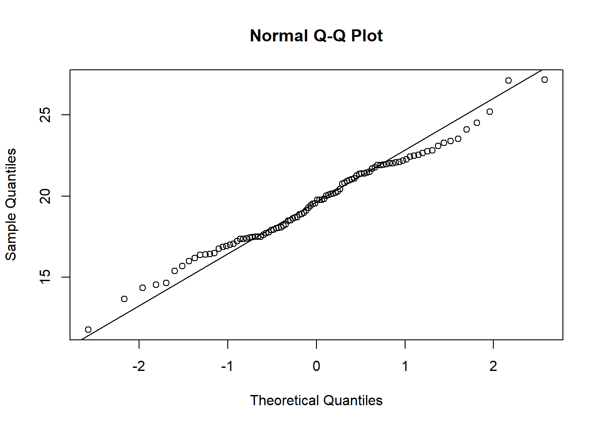
Answer:
The Q-Q plot is approximately linear in the central region of (-1, 1), while some slight deviations occurred in the tails. Overall, the samples fit a normal distribution.
Since we know that norm1 contains normal distributed random numbers, the fit should naturally be good. However, it should be noted that one cannot expect a perfect straight line in the plot, as we are dealing with random numbers. A slight deviation at both ends of the line is not uncommon.
qqnorm(exp1)
qqline(exp1)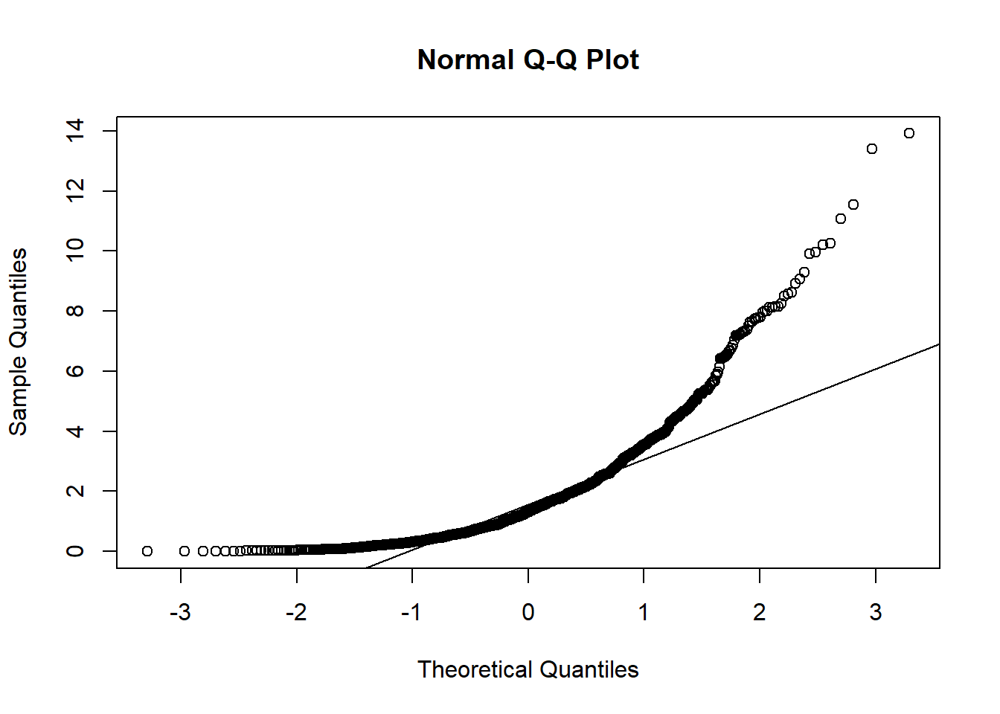
qqnorm(unif1)
qqline(unif1)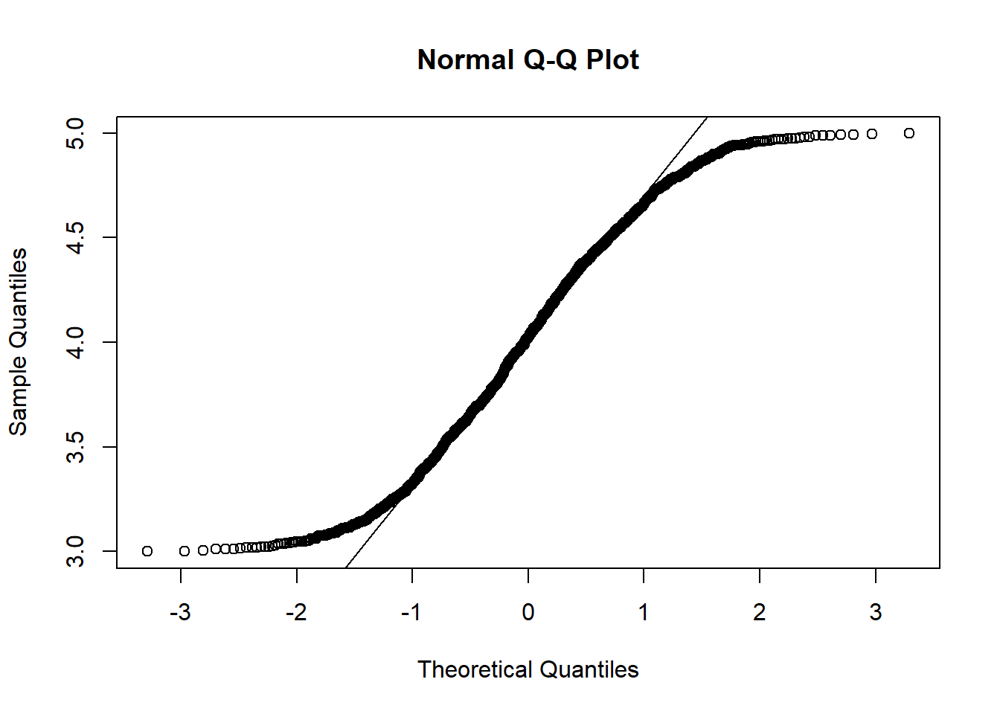
Answer:
In the central region of (-1, 1), the observed data fit these two distributions well. However, obvious deviations can be found at both ends of the lines. Therefore, the samples do not fit an exponential distribution or a uniform distribution.
3 Model for aluminum levels
We study the aluminum levels in the 94 samples again.
qqnorm(jordprov$al)
qqline(jordprov$al)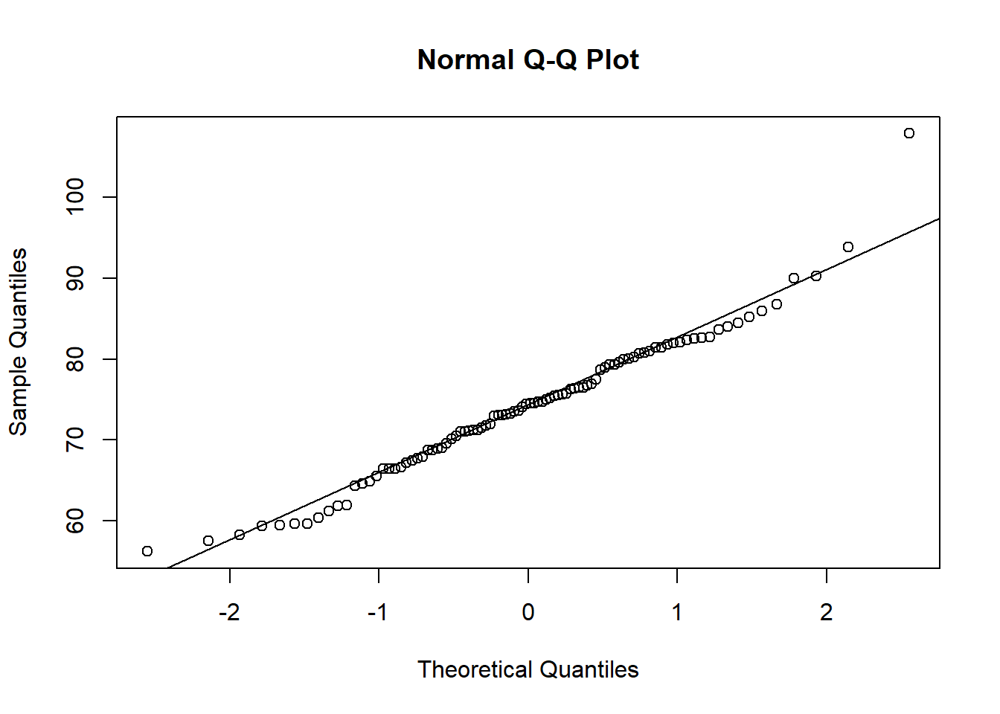
Answer:
The points on the Q-Q plot align with a straight line well. Therefore, it seems to be a good fit to a normal distribution.
Previously, you used R to calculate the mean (m) and standard deviation (s) for the aluminum levels. You can use these values as estimates of the expected value \(\mu\) and the standard deviation \(\sigma\) in the fitted distribution. Given that you believe a normal distribution fits the data well, we can now set up a model for our observations.
Model: \(X=\) “aluminum level in a soil sample”; \(X\) is normal distribution with expected value \(\mu\) and standard deviation \(\sigma\). We estimate these parameters as \(\hat{\mu} = m\) (“sample mean”) and \(\hat{\sigma} = s\) (“standard deviation for the sample”).
hist(jordprov$al, probability=TRUE)
xx <- seq(40, 120, by=0.2)
lines(xx, dnorm(xx, mean_al, sd_al))Answer:
Mean: \(\hat \mu = 74.11\)
Standard deviation: \(\hat \sigma = 8.74\)
prob_al_gt80 = 1 - pnorm(80, mean_al, sd_al)Answer:
\(P(X > 80) = 0.25\)
quant_al_gt10p = qnorm(0.1, mean_al, sd_al)Answer:
\(Q(0.1) = 62.91\)
4 Model for calcium levels
qqnorm(jordprov$ca)
qqline(jordprov$ca)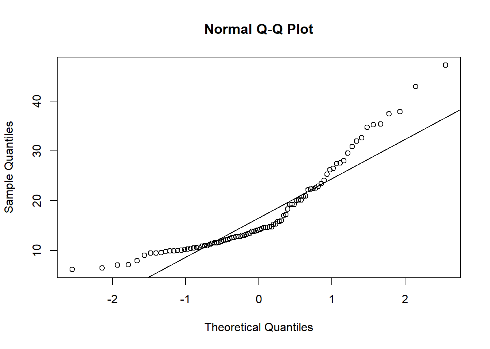
Answer:
The points on the Q-Q plot above do not lie with a straight line. It does not fit a normal distribution well.
Another standard distribution commonly used for bio data is the lognormal distribution. Measurements can be modeled with a lognormal distribution if the logarithms of the measurements fit well with a normal distribution. This means that no special QQ-plot is needed for this distribution, one can use qqnorm(log(stickprovsnamn)).
qqnorm(log(jordprov$ca))
qqline(log(jordprov$ca))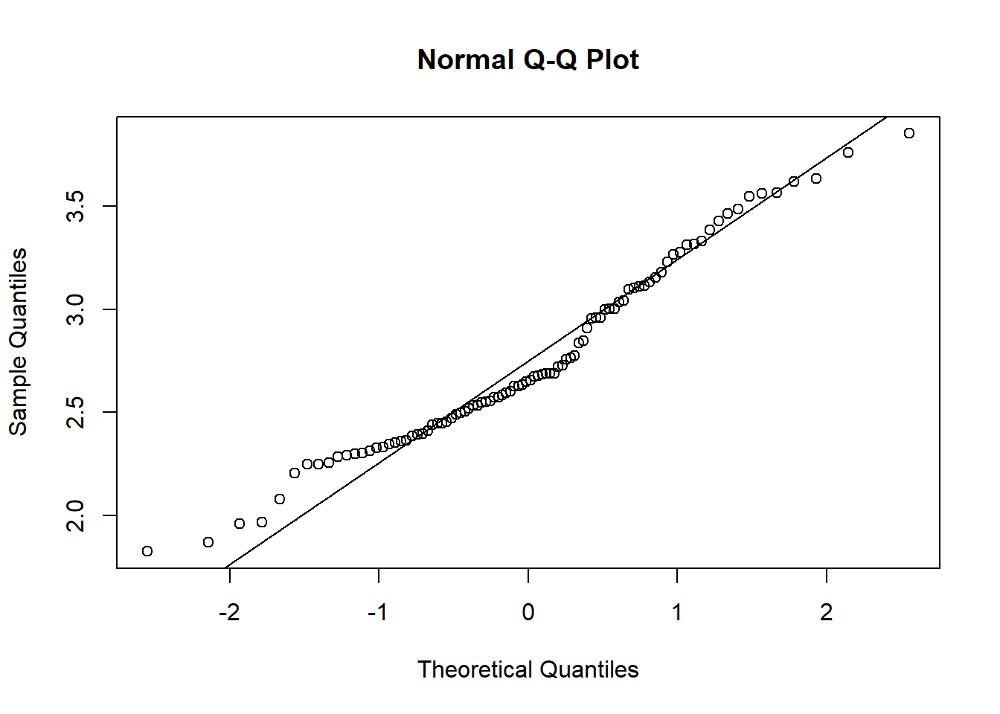
Answer:
The log values fit a normal distribution better than the initial values.
Now you need to estimate the probability that a calcium measurement exceeds 30 mg/g. First, you need to set up a model for calcium measurements. Assume that calcium values follow a lognormal distribution. Then, use the model to make calculations.
mean_log_ca = mean(log(jordprov$ca))
sd_log_ca = sd(log(jordprov$ca))
hist(log(jordprov$ca), probability=TRUE)
xx <- seq(min(log(jordprov$ca)), max(log(jordprov$ca)), length.out = 200)
lines(xx, dnorm(xx, mean_log_ca, sd_log_ca))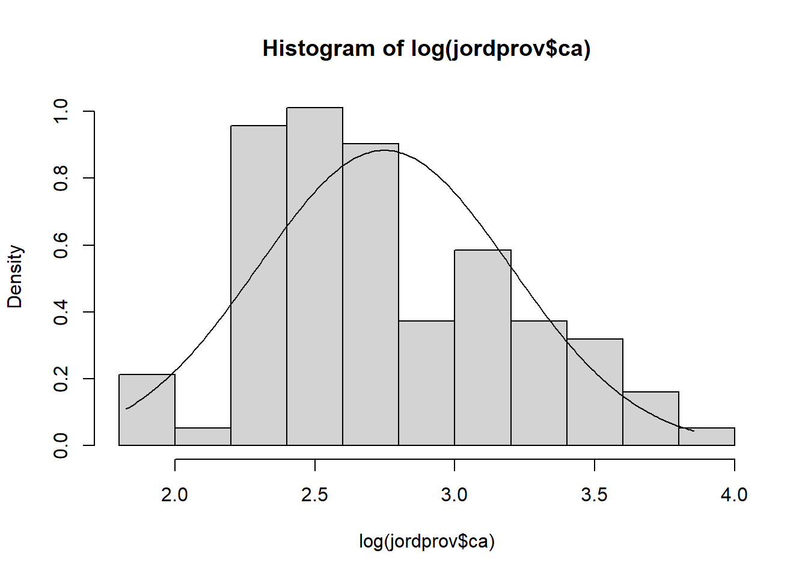
Answer:
Mean: \(\hat \mu = 2.75\)
Standard deviation: \(\hat \sigma = 0.45\)
prob_log_ca_gt30 = 1 - pnorm(log(30), mean_log_ca, sd_log_ca)Answer:
\(P(X \gt \log(30)) = 0.07\)